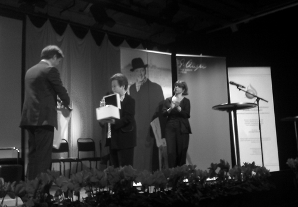

|
|

تقدیر از شهامت: گزارشی از اهدای جایزه پرانگر 2011 بدون حضور برنده آن نرگس محمدی
چهار شنبه25 آبان 1390

تغییر برای برابری - مراسم اهدای جایزه پرانگر 2011 به نرگس محمدی فعال برجسته حقوق بشر در ایران، روز چهاردهم نوامبر بدون حضور او درخانه فرهنگ استکهلم برگزارشد.نرگس اجازه خروج از ایران را نداشت.جایزه پرانگر یک جایزه بین المللی است که دولت سوئد آن را در 2004 بنیاد نهاد. مسئول ارائه این جایزه، خانه تاریخ زنده در سوئد است. این جایزه به خاطر کوشش های انساندوستانه و دموکراسی جهانی درنظر گرفته شده است.

مراسم با صدای زیبای باربارا هنریکس خواننده معروف سوئدی امریکایی تبار آغازشد
عکس از : فتانه نیکخواکیان
در این مراسم به جای نرگس محمدی، شیرین عبادی برنده نوبل صلح، رئیس کانون مدافعان حقوق بشر، دوست و همکار نرگس در کانون مدافعان حقوق بشر جایزه نسرین را دریافت کرد. او گفت: این جایزه نه تنها به خاطر تلاش های نرگس محمدی است بلکه ارج نهادن به فعالیت های فعالان حقوق بشر در ایران است که در بدترین شرایط کارمی کنند. او گفت نرگس محمدی در پیامی که برای بنیاد تاریخ زنده فرستاده بود قید کرده است که این جایزه مسلما در ارتقا حقوق بشر درایران و شهامت بخشیدن به همکاران او تاثیر بسیاری دارد.
«نرگس محمدی فعال حقوق بشر در ایران از زمان دانشجویی فعالیت هایش را برای ارتقا حقوق بشر آغاز کرده است. او در سال 2010 بازداشت شد، مدتی در زندان بود و سپس با وثیقه آزاد و پس از آزادی از زندان به بیماری فلج ادواری عضلانی مبتلا شد و هم اکنون نیز با این مشکل مواجه است و جالب آنکه با تمام معالجاتی که در ایران صورت گرفته هنوز نتوانسته اند علت بیماری او را کشف کنند. علاوه بر نرگس چند نفر از زندانیان سیاسی نیز به همین بیماری مبتلا شده اند. نرگس در دادگاه به 11 سال حبس محکوم شد که اکنون درخواست او به دادگاه تجدید نظر ارائه شده است.» عبادی ضمن اشاره به فعالیت های نرگس محمدی درباره دلیل آزار و مجازات نرگس گفت: در 2001 به کمک مدافعان حقوق بشر کانون مدافعان را تاسیس کردیم و فعالیت های زیادی را آغاز کردیم یکی از کارها، وکالت رایگان زندانیان سیاسی بود که متاسفانه در حال حاضر کسانی مانند نسرین ستوده، آقایان سیف زاده و سلطانی که در این زمینه فعال بودند در زندان هستند. کار دیگر ارائه گزارش ازنقض حقوق بشر در ایران بود که در این زمینه با خبرنگارانی مستقل همکاری می کردیم که برخی از این خبرنکاران شجاع حکم های سنگین گرفته اند. کار دیگر کانون، دفاع از خانواده های زندانیان سیاسی بود که نرگس محمدی مسئولیت آن را برعهده داشت و علاوه براین نایب رئیس و سخنگوی کانون بود. ماموران امنیتی از 2008 شروع به ایجاد مزاحمت برای کانون کردند و در اواخر 2008 نیز این ان جی او را بستند. بعد سراغ تک تک ما آمدند. به نرگس هم فشار اوردند که با کانون همکاری نکند اما نرگس در نهایت شهامت این خواسته را رد کرد و اعلام کرد که او کاری غیرقانونی انجام نمی دهد. باردیگر همسرش تقی رحمانی را بازداشت کردند و او را تهدید کردند که دراین باره خبررسانی نکند اما او نپذیرفت و همچنان فشار براو ادامه دارد.


عبادی سپس ضمن ارائه آماری از نقض حقوق بشر در ایران گفت من فقط چند آمار به شما می دهم که ببنید در ایران چه می گذرد و چگونه نقض حقوق بشر در ایران صورت می گیرد، چطور زندانیان سیاسی در ایران به صورت آرام به سمت مرگ می روند.در سال گذشته 44 وکیل دادگستری یا به زندان رفتند و یا محاکمه شدند. تنها جرم شان دفاع از زندانیان سیاسی بود، دادگاه طوری رفتار می کند که دیگر هیچ وکیلی شهامت دفاع کردن از زندانیان سیاسی را نداشته باشد.من از همدردی شما با سکینه آشتیانی برای زنی که قرار بود سنگسار شود سپاسگزارم. با حمایت های شما هنوز این حکم اجرا نشده است اما وکیل شجاع او یعنی آقای جاوید موتکیان چون در این باره اطلاع رسانی کرده بود او را بازداشت کردند و 11 سال حکم برایش گرفتند در حال حاضر درزندان بیمارهم هست. طبق گزارش سازمان گزارشگران بدون مرز ایران بیشترین آمار زندانی روزنامه نگاران و وبلاگر را دارد. بیشترین اعدام مجرمیان کمتراز 18 سال در ایران صورت می گیرد، تبعیض علیه مذهب بسیاراست و بسیاری از بهاییان بدون به خاطر اعتقادات دینی شان در زندان اند و اینها گوشه هایی از نقض حقوق بشر در ایران است.
شیرین عبادی هنگام جایزه نرگس محمدی گفت : شخصا ازاین که جایزه تاریخ بنیاد زنده به چنین زن شجاعی تقدیم شده سپاسگذاری می کنم. افتخار می کنم که دوست وهمکاری مثل نرگس دارم. آرزو می کنم کاش خودش اینجا بود و جایزه اش را دریافت می کرد.می دانم می دانم روزی خواهد آمد پرنده را برای همیشه نمی توان از پرواز باز نگه داشت زندانیان ما آزاد می شوند.
در ادامه پنلی هم درباره شهامت مدنی و حقوق بشر برگزار شد و در آن نمایندگانی از خانه تاریخ زنده دراین سمیناربه نقش اروپا در دفاع از حقوق بشر نیز پرداخته شد .شیرین عبادی یکی از شرکت کنندگان در این پنل گفت: متاسفانه چندسال است در غرب تا حرف ازایران می شود بحث انرژی هسته ای را مطرح می کنند باید پرسید آیا برای اروپا که اینقدر طرفدار حقوق بشر است فقط حقوق خودشان مطرح است وبرایشان مهم نیست که چه بر سرمردم می آید ؟ به خاطر همین فراموشی است که وضعیت حقوق بشر در ایران روز به روز بدترشده است.